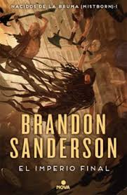

Nacidos de la bruma - El Imperio Final
Sinopsis
En un mundo cubierto de ceniza y gobernado durante mil años por el tirano inmortal Lord Legislador, un carismático ladrón llamado Kelsier reúne a una banda de especialistas para dar el golpe definitivo: robar el tesoro del imperio y derrocarlo. Para lograrlo, entrena a Vin, una joven huérfana que, al igual que él, es una Nacida de la Bruma capaz de obtener poderes sobrehumanos al «quemar» distintos metales en su interior.
Opinión personal
Muy buen desarrollo de personajes como Kelsier o Vin. Muy fácil de leer y un gran sistema de poderes en un mundo creado por Brandon Sanderson.